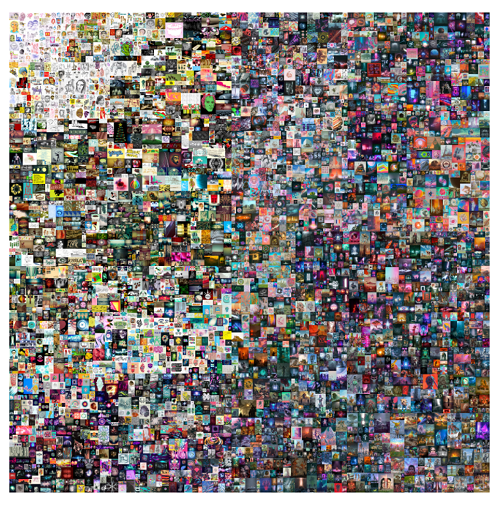
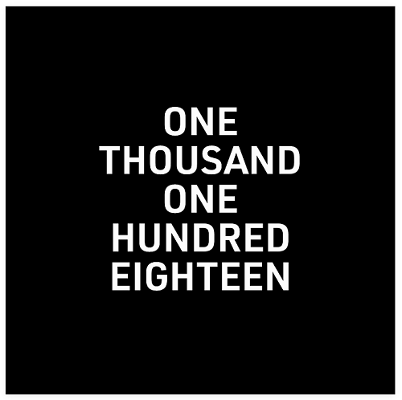
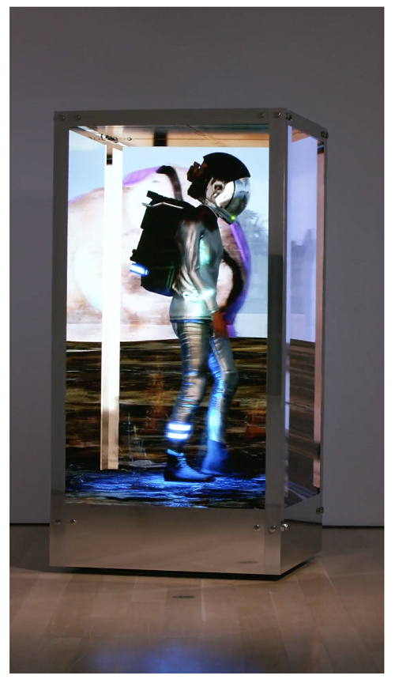

Давайте подивимося на деякі з найдорожчих NFT коли-небудь проданих станом на травень 2022 року.
- Everydays: The First 5000 Days – продано за 69,3 млн доларів
- Clock – 52,7 млн доларів
- HUMAN ONE – 28,9 млн доларів
- CryptoPunk №5822 – 23,7 млн доларів
- CryptoPunk №7523 – 11,75 млн доларів
1.Everydays: The First 5000 Days" – продано за 69,3 млн доларів
Everydays: The First 5000 Days – цифрова робота американського графічного дизайнера Майка Вінкельмана, більш відомого як Beeple. Цей NFT був проданий за 69,3 млн доларів у лютому 2021 року та куплений NFT-інвестором, під псевдонімом Metakovan, на аукціоні Christie's.
Даний NFT – це колаж з 5000 ранніх робіт Beeple. З 2007 року Beeple почав завантажувати нове зображення у свою стрічку Instagram щодня протягом 13 років. Його "повсякденні" твори мистецтва часто зображуються в постапокаліптичних пейзажах і зазвичай мають якесь відношення до поточних новин чи поп-культури. Цей NFT-колаж можна вважати відображенням розвитку Beeple як цифрового художника.

2. Clock – 52,7 млн доларів
Clock зображує динамічний таймер, який підраховує кількість днів, проведених у в'язниці засновником WikiLeaks, Джуліаном Ассанжем. Ассанж замішаний у дуже спірній справі. Йому загрожує екстрадиція з Великобританії до США за численними звинуваченнями у шпигунстві та до 175 років за ґратами.
Кураторами цього NFT були цифровий художник Пак і сам Ассанж, щоб
підтримати його рахунки за юридичні послуги. Даний NFT було продано з аукціону за 16 953 ETH у лютому 2022, децентралізованій організації (DAO) AssangeDAO, створеної для краудфандингу та покупки цього самого NFT. Крім ETH, які вони використовували для придбання "Clock", AssangeDAO, як і раніше, володіє 17 422 ETH, які вони початково залучили для покупки даного NFT.
Пак та Ассанж не лише були кураторами Clock, але й дозволили будь-кому створювати свої власні NFT. Користувачі можуть токенізувати цензурне повідомлення за будь-яку ціну або безкоштовно. Повідомлення перетвориться на зображення, що показує закреслені слова, начебто вони піддавалися цензурі. Прибуток з цієї NFT-серії перейде до організацій, що виступають за свободу і були обрані Ассанжем та Паком.

3. HUMAN ONE – 28,9 млн доларів
Ще один революційний NFT від Beeple, HUMAN ONE – це його перший фізичний витвір мистецтва, який він створив. У листопаді 2021 року його було продано на аукціоні Christie's за 28,9 млн доларів.
HUMAN ONE – це 3D-скульптура, що рухається, з 4 цифровими екранами. Вона відображає нескінченне відео космонавта, що подорожує різними місцями у різний час доби. Гібридний витвір мистецтва відображає художні амбіції Beeple за межами цифрової реальності.

4. CryptoPunk №5822 – 23,7 млн доларів
CryptoPunks – один із перших відомих NFT-проєктів, який продовжує залишатися в списку найдорожчих NFT. CryptoPunk #5822 був проданий за 8000 ETH у лютому 2022 року генеральному директору стартапу, що займається блокчейн-технологією. Він взятий із найрідкіснішого видання з прибульцями. У всій NFT-колекції їх лише 9 штук. Що робить його особливим, так це те, що він також є одним із 333 зображень з банданою.
5. CryptoPunk №7523 – 11,75 млн доларів
Наступний за значимістю NFT також належить сімейству CryptoPunk. До продажу #5822, #7523 був найдорожчим CryptoPunk, який коли-небудь був проданим.
CryptoPunk №7523 був проданий на аукціоні Sotheby's за 11,75 млн доларів під час пандемії COVID у червні 2021 року. Він не тільки є частиною вкрай рідкісного видання прибульців, але й є єдиним інопланетянином у масці, що і сподобалося покупцю в цьому конкретному CryptoPunk.
Де я можу придбати NFT?
Ви можете придбати свій перший NFT на різних NFT-маркетплейсах. Залежно від блокчейн-мережі вам знадобиться сумісний гаманець і підтримувані криптовалюти для покупки. Наприклад, ціни на NFT на BNB Smart Chain (BSC) майже завжди вказані в BNB або BUSD, у той час як NFT на блокчейні Ethereum зазвичай використовують ether (ETH). Ви можете купити необхідні криптовалюти на біржі Binance та переказати їх на гаманець, який можна підключити до NFT-маркетплейса. Якщо ви купуєте NFT на Маркетплейсі Binance NFT, ви можете просто переказати свої кошти у гаманець поповнення. Виберіть потрібний NFT та натисніть [Купити зараз] або [Зробити пропозицію]. Ознайомтеся з нашим посібником для NFT-маркетплейсу, щоб отримати більш детальну інформацію. Якщо ви хочете купити NFT на інших маркетплейсах, гаманці у вигляді розширення браузера, такі як Binance Chain Wallet та MetaMask, є хорошими варіантами. Після переказу коштів з Binance на гаманець, підключіть його до NFT-маркетплейса, щоб розпочати. Не забудьте перевірити URL-адресу, яку ви відвідуєте, щоб переконатися, що ви знаходитесь на офіційному вебсайті. Якщо ви підключите свій гаманець до підроблених або підозрілих вебсайтів, ваші кошти можуть бути викрадені.
Заключні думки
Немає сумнівів у тому, що популярність NFT зростає і постійно проходять нові рекордно високі продажі. Хоча більшість NFT – це просто колекційні твори мистецтва, кількість NFT, створених з різними варіантами використання, постійно зростає. У міру розвитку NFT, ми можемо побачити більше варіантів використання та прийняття, ніж просто цифрові предмети колекціонування, і, можливо, навіть дорожчі розпродажі.